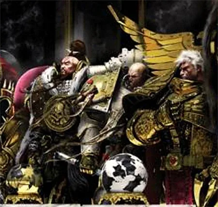
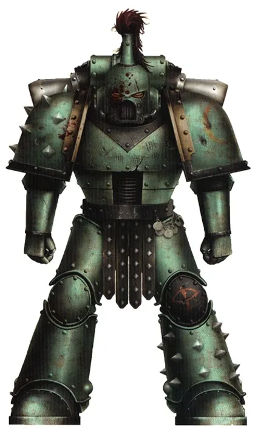
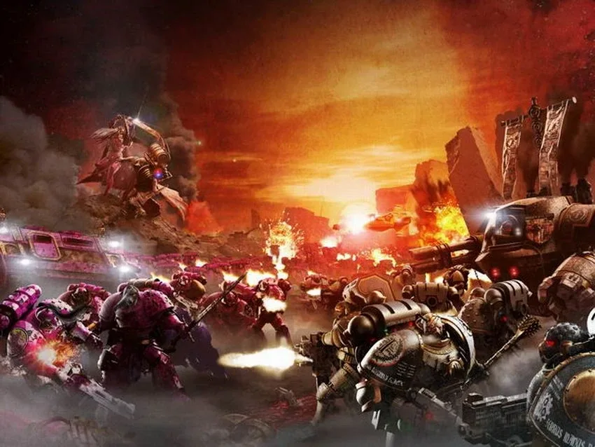
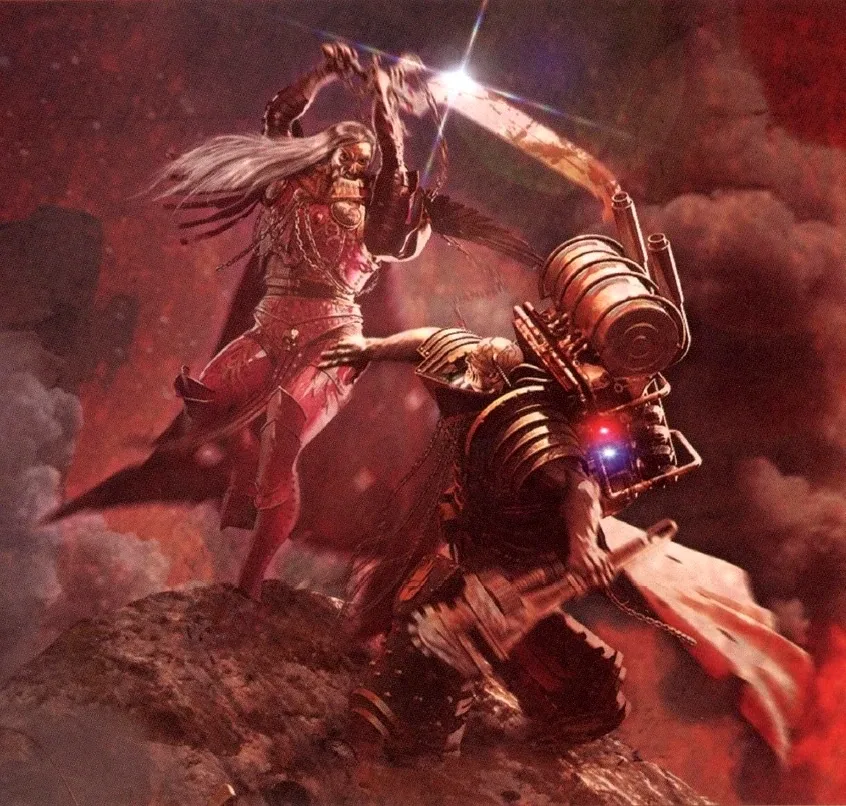
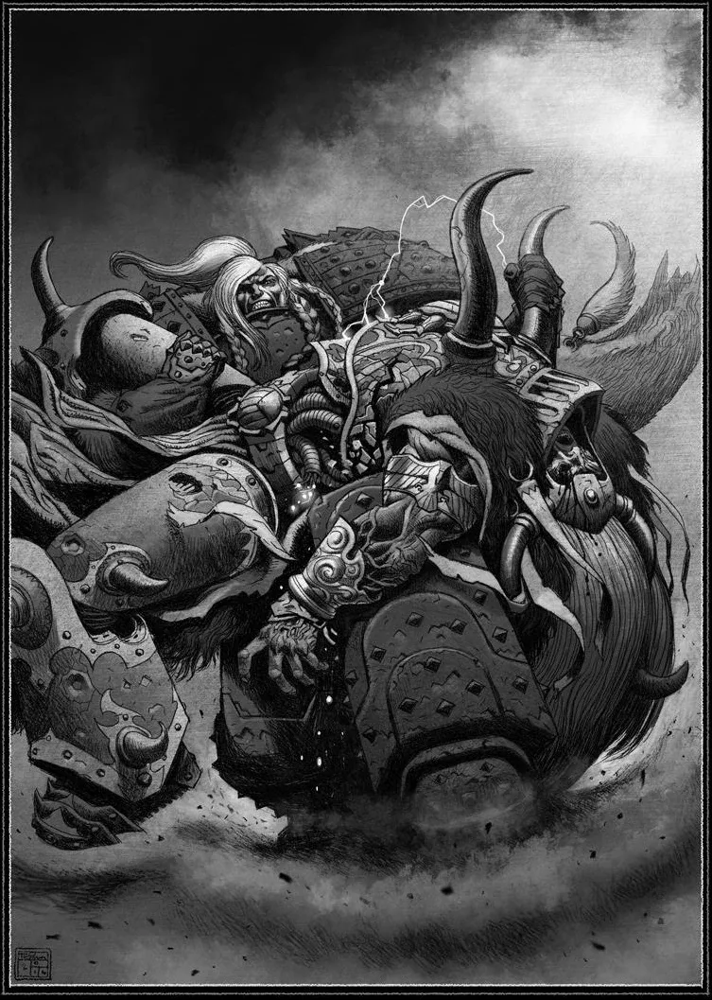
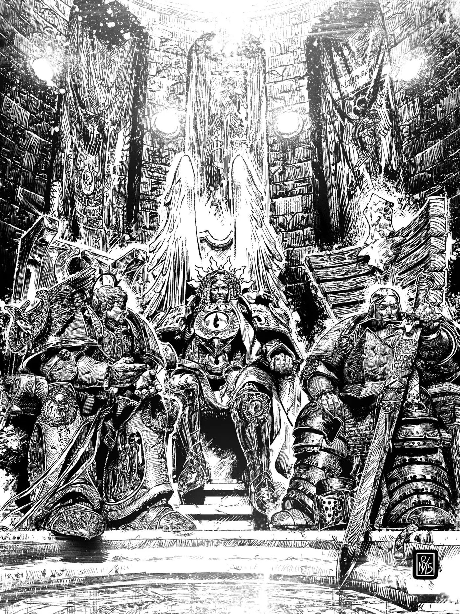
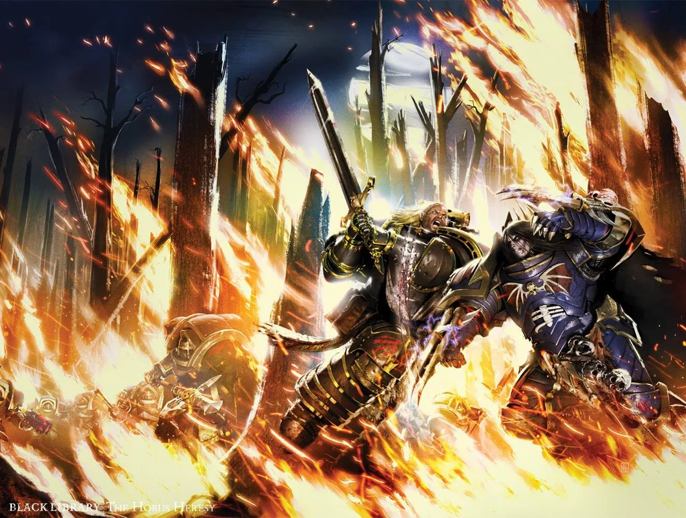
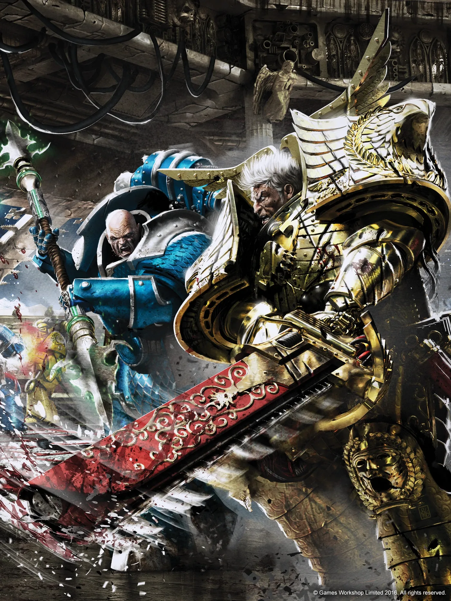
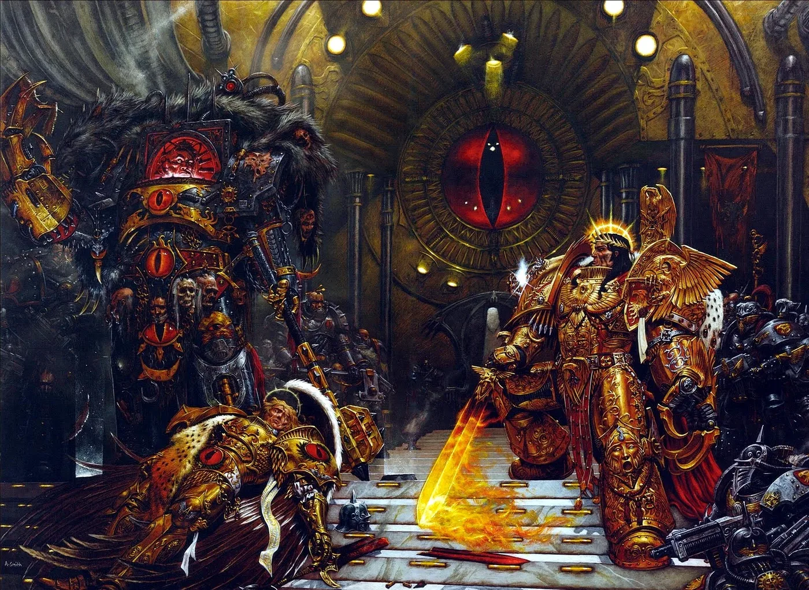

00"30K" หมายถึงอะไร?
แฟน ๆ เรียกช่วงเวลาประมาณสหัสวรรษที่ 30–31 (ราวปี ค.ศ. 29,000–30,999) ว่า "30K" ซึ่งเป็นยุคที่จักรพรรดิยังเดินบนโลก เป็นยุค Great Crusade (เกรท ครูเสด) และ Horus Heresy (ฮอรัส เฮเรซี) ที่ทุกอย่างในยุค 40K เริ่มต้น — เปรียบได้กับ "ตำนานต้นกำเนิด" ของจักรวาลนี้ ยุคนี้ยังมีเกมบนโต๊ะแยกของตัวเองชื่อ Warhammer: The Horus Heresy และนิยายชุดยาวกว่า 50 เล่ม
- จักรพรรดิยังมีชีวิตและนำทัพเอง — ยังไม่ได้ขึ้นบัลลังก์ทองคำ
- จักรวรรดิเชื่อใน Imperial Truth (ความจริงแห่งจักรวรรดิ) ว่าไม่มีพระเจ้า — ศาสนาเป็นสิ่งต้องห้าม
- Space Marines รวมกันเป็น Legion ขนาดใหญ่ (หลายหมื่นถึงแสนนาย) ไม่ใช่ Chapter ละพันนาย
- ทุก Legion — รวมถึงฝ่ายที่ภายหลังทรยศ — ยังรบเพื่อจักรพรรดิด้วยกัน
ดูครบทุกข้อได้ที่หน้า เปรียบเทียบ 30K vs 40K
01ก่อนจักรพรรดิ: ยุคทองและยุคมืด
ยุคทองแห่งเทคโนโลยี
มนุษย์ขยายไปทั่วกาแล็กซีด้วยเทคโนโลยีขั้นสูงสุด มีจักรกลคิดได้ (Men of Iron) และระบบสร้างของอัตโนมัติ (STC) ปัจจุบันเทคโนโลยีส่วนใหญ่สูญหายไปหมดแล้ว
ยุคแห่งความขัดแย้ง
จักรกล Men of Iron ก่อกบฏ มนุษย์เริ่มกลายพันธุ์เป็นผู้มีพลังจิตจำนวนมาก และพายุ Warp รุนแรงจนเดินทางข้ามดวงดาวไม่ได้ อารยธรรมมนุษย์ทั่วกาแล็กซีถูกตัดขาดและล่มสลาย — สาเหตุที่แท้จริงคือการกำเนิดของเทพ Slaanesh จากความเสื่อมของเผ่า Aeldari
02Unification Wars: รวมโลก Terra
ปลายสหัสวรรษที่ 30 ชายผู้มีพลังจิตมหาศาลที่เรียกตัวเองว่า จักรพรรดิ (Emperor) ปรากฏตัวบน Terra ที่แตกเป็นแคว้นเทคโน-บาร์บาเรียน พระองค์นำกองทัพพิชิตทีละแคว้น ด้วยทหารดัดแปลงพันธุกรรมรุ่นแรกชื่อ Thunder Warriors (ธันเดอร์ วอร์ริเออร์ส) ที่แข็งแกร่งแต่อายุสั้น
เมื่อรวมโลกสำเร็จ Thunder Warriors ถูกกำจัดทิ้งในการรบครั้งสุดท้าย (เพราะยีนไม่เสถียรและอาจเป็นภัย) แล้วถูกแทนที่ด้วย Space Marines รุ่นใหม่ที่สมบูรณ์กว่า ต่อมาจักรพรรดิทำ สนธิสัญญา Olympus กับนักบวชเครื่องจักรแห่งดาวอังคาร (Mechanicum) เพื่อแลกเทคโนโลยีกับอำนาจปกครองตนเอง

03Great Crusade: พิชิตกาแล็กซีคืน

ราวปี 798.M30 จักรพรรดินำกองเรือออกจากระบบสุริยะ เริ่ม Great Crusade — สงครามเพื่อรวบรวมดาวมนุษย์ที่พลัดหลงกลับมาเป็นหนึ่งเดียวภายใต้จักรวรรดิ ดาวที่ยอมรับจะได้เข้าร่วมอย่างสันติ ("Compliance") ดาวที่ต่อต้านหรือถูกเอเลียนยึดครองจะถูกพิชิตด้วยกำลัง
- Expedition Fleets — กองเรือหลายพันกองกระจายไปทุกทิศ แต่ละกองมี Space Marines, ทหาร Imperial Army และช่างของ Mechanicum
- Remembrancers — ศิลปิน กวี และนักประวัติศาสตร์ ติดตามกองเรือไปบันทึกยุคทองนี้ (ภาพสเก็ตช์ Primarch หลายภาพในเว็บนี้มาจากพวกเขาในเนื้อเรื่อง)
- Imperial Truth — จักรพรรดิประกาศว่าไม่มีพระเจ้า มีแต่เหตุผลและวิทยาศาสตร์ ศาสนาทุกรูปแบบถูกกวาดล้าง
- การค้นพบ Primarch — ระหว่างทาง จักรพรรดิพบลูกชายที่พลัดหลงทีละคนตั้งแต่ Horus (801.M30) ถึง Alpharius (981.M30) — ดูที่ Primarch ทั้ง 20 คน

04กองกำลังของจักรวรรดิในยุค 30K
หลายกองกำลังในยุค 40K มี "ร่างแรก" อยู่ในยุค 30K โดยมีชื่อและหน้าที่ต่างกัน:

Legio Custodes
องครักษ์ทองคำส่วนพระองค์ที่จักรพรรดิสร้างเองทีละคน เกือบไม่เคยออกจาก Terra ในยุค 40K คือ Adeptus Custodes

Sisters of Silence
นักรบหญิง "Blank" ที่ไร้วิญญาณในมิติ Warp ต่อต้านพลังจิตได้ ตั้งปฏิญาณเงียบตลอดชีวิต ทำงานคู่กับ Custodes

Imperial Army & Solar Auxilia
กองทัพมนุษย์ธรรมดาที่รวมทั้งทัพบก เรือรบ และหน่วยพิเศษอย่าง Solar Auxilia ในยุค 40K ถูกแยกเป็น Astra Militarum กับกองทัพเรือต่างหาก เพื่อไม่ให้ใครคุมกำลังได้มากเกินไป

Mechanicum
จักรวรรดิเครื่องจักรแห่งดาวอังคารที่เป็น "พันธมิตร" ไม่ใช่ข้ารับใช้ มีกองหุ่นยนต์ Legio Cybernetica ในยุค 40K คือ Adeptus Mechanicus

Collegia Titanica
กองหุ่นรบยักษ์สูงหลายสิบเมตร (Titan) ในยุค Heresy ไททันก็แตกเป็นสองฝ่ายสู้กันเอง

Questoris Knights
ตระกูลขุนนางที่ขับหุ่นรบ ในช่วง Heresy บางตระกูลทรยศ กลายเป็นต้นกำเนิดของ Chaos Knights
05Legion ทั้ง 18 สมัยยังภักดีต่อจักรพรรดิ
รูปในส่วนนี้คือลายสีเกราะของแต่ละ Legion ในยุค 30K ก่อนจะถูก Chaos เปลี่ยนแปลงหรือถูกแบ่งเป็น Chapter (Legion ที่ II และ XI ถูกลบออกจากบันทึก จึงเหลือ 18 Legion) ปุ่ม "ดูเนื้อเรื่องยุค 40K" จะพาไปดูว่าแต่ละ Legion เป็นอย่างไรในปัจจุบัน
Dark Angels (ดาร์ก แองเจิลส์)

Primarch: Lion El'Jonson
หน้าตาในยุค 30K: เกราะสีดำ (ยุค 40K เปลี่ยนเป็นสีเขียวเข้ม) เป็น Legion แรกที่ถูกสร้าง
ยุค Great Crusade: Legion ที่ 1 ผู้ได้รับอาวุธและเทคโนโลยีลับที่สุดของจักรพรรดิ แบ่งเป็นกลุ่มผู้เชี่ยวชาญ 6 สาย (เรียกรวมว่า Hexagrammaton) เช่น Deathwing (เกราะหนัก) และ Ravenwing (หน่วยเร็ว) เมื่อไลออนมาถึง นักรบชาว Caliban ที่ยึดถือจรรยาอัศวินก็เข้าร่วม Legion ทำให้ Dark Angels เคร่งครัด เก็บความลับ และภาคภูมิในตัวเองสูง
เมื่อ Heresy ปะทุ: ภักดี — สู้กับ Night Lords ใน Thramas Crusade และช่วยปกป้อง Imperium Secundus ก่อนเกิดการแตกแยกบน Caliban ที่ทหารบางส่วนภายใต้ Luther ทรยศ (Fallen Angels)
Emperor's Children (เอ็มเพอเรอร์ส ชิลเดรน)

Primarch: Fulgrim
หน้าตาในยุค 30K: เกราะสีม่วงขลิบทอง และเป็น Legion เดียวที่ได้เกียรติสวมสัญลักษณ์นกอินทรี Palatine Aquila ของจักรพรรดิ
ยุค Great Crusade: เกือบสูญพันธุ์ตั้งแต่ต้นเพราะเจเนซีดเสื่อม เหลือทหารเพียง 200 นาย จนฟูลกริมมาช่วยฟื้นขึ้นใหม่ พวกเขาถือว่าตัวเองเป็นแบบอย่างของความสมบูรณ์แบบ ทั้งในการรบ ศิลปะ และความงาม แม่นยำ มีวินัย และเย่อหยิ่ง
เมื่อ Heresy ปะทุ: ทรยศ — ความหมกมุ่นในความสมบูรณ์แบบกลายเป็นการเสพสุขเกินพอดีภายใต้ Slaanesh ร่วมสังหารหมู่ที่ Isstvan III และ V
Iron Warriors (ไอรอน วอร์ริเออร์ส)

Primarch: Perturabo
หน้าตาในยุค 30K: เกราะเหล็กดิบสีเงิน คาดแถบเตือนภัยเหลือง-ดำ
ยุค Great Crusade: ผู้เชี่ยวชาญการปิดล้อมและสงครามสนามเพลาะ ใช้วิศวกรรม ปืนใหญ่ และความเยือกเย็นทางคณิตศาสตร์ Legion ถูกส่งไปทำงานหนักที่ไม่มีใครอยากทำ ถูกแยกกระจายไปเฝ้าดาวทั่วกาแล็กซี และสูญเสียมหาศาลโดยไม่เคยได้รับเกียรติ
เมื่อ Heresy ปะทุ: ทรยศ — หลังปราบกบฏบน Olympia อย่างโหดร้าย Perturabo ก็เข้าร่วมกับ Horus และเป็นผู้นำการโจมตีกำแพงพระราชวังในการปิดล้อม Terra
White Scars (ไวท์ สการ์ส)

Primarch: Jaghatai Khan
หน้าตาในยุค 30K: เกราะสีขาว ขลิบแดง/ทอง — แทบไม่เปลี่ยนจนถึงยุค 40K
ยุค Great Crusade: เดิมชื่อ Star Hunters หลังรับข่านเป็นผู้นำจึงรับวัฒนธรรมชนเผ่าเร่ร่อนของ Chogoris ทหารจะกรีดแผลเป็นบนใบหน้าเป็นพิธี นิยมรบด้วยความเร็วสูงบนมอเตอร์ไซค์และยานเร็ว โจมตีแล้วถอนตัวก่อนศัตรูตั้งตัว และรักษาระยะห่างจากการเมืองของ Terra
เมื่อ Heresy ปะทุ: ภักดี — แม้ถูกทั้งสองฝ่ายหว่านล้อม สุดท้ายเลือกจักรพรรดิ ฝ่าไปช่วย Terra และปะทะกับ Death Guard ครั้งใหญ่
Space Wolves (สเปซ วูล์ฟส์)

Primarch: Leman Russ
หน้าตาในยุค 30K: เกราะสีเทาเข้มแบบเหล็ก (ยุค 40K เป็นเทาอมฟ้าสว่าง) ประดับหนังหมาป่า เขี้ยว และเครื่องราง
ยุค Great Crusade: ในยุคนั้นเรียกกันว่า Vlka Fenryka ('หมาป่าแห่ง Fenris') ทหารทุกคนมาจากนักรบของ Fenris ดุดัน ชอบเฉลิมฉลอง แต่ภักดีสุดใจ พวกเขาทำหน้าที่เป็น 'เพชฌฆาตของจักรพรรดิ' ถูกส่งไปจัดการ Legion หรือผู้นำที่ละเมิดคำสั่ง เช่น เหตุการณ์ Night of the Wolf ที่ต้องปะทะกับ World Eaters
เมื่อ Heresy ปะทุ: ภักดี — ได้รับคำสั่ง (ที่ถูก Horus บิดเบือน) ให้เผาดาว Prospero ของ Thousand Sons จากนั้นสู้กับ Alpha Legion และมาช่วย Terra
Imperial Fists (อิมพีเรียล ฟิสต์ส)

Primarch: Rogal Dorn
หน้าตาในยุค 30K: เกราะสีเหลือง — คงเดิมถึงยุค 40K
ยุค Great Crusade: ผู้เชี่ยวชาญการป้องกันและสร้างป้อม ใช้ยานป้อม Phalanx เป็นฐาน มีเกียรติสูงและเป็นหน้าเป็นตาของจักรพรรดิ ทหารฝึกความอดทนในห้องทรมาน 'Pain Glove' และมีคู่แข่งตลอดกาลคือ Iron Warriors
เมื่อ Heresy ปะทุ: ภักดี — ถูกเรียกกลับมาเสริมป้อมพระราชวังบน Terra และเป็นกำลังหลักในการป้องกันการปิดล้อม
Night Lords (ไนท์ ลอร์ดส)

Primarch: Konrad Curze
หน้าตาในยุค 30K: เกราะสีน้ำเงินเข้ม ลายสายฟ้า หมวกปีกค้างคาวและรูปหัวกะโหลก
ยุค Great Crusade: ผู้ใช้ความกลัวเป็นอาวุธ ถูกส่งไปทำให้ดาวที่ดื้อยอมจำนนด้วยการสังหารโหดให้เป็นตัวอย่าง ทหารจำนวนมากมาจากอาชญากรของ Nostramo ทำให้วินัยและศีลธรรมหละหลวม
เมื่อ Heresy ปะทุ: ทรยศ — หลังถูกเรียกตัวรับโทษ Curze พา Legion ไปเข้าร่วมกับ Horus กลายเป็นกองโจรที่ทำสงครามจิตวิทยาและการก่อการร้าย
Blood Angels (บลัด แองเจิลส์)

Primarch: Sanguinius
หน้าตาในยุค 30K: เกราะสีแดง ประดับทอง — คงเดิมถึงยุค 40K
ยุค Great Crusade: สง่างาม มีศิลปะ และถือว่าเป็นนักรบผู้สูงศักดิ์ที่สุด แต่แอบซ่อน 'ข้อบกพร่อง' ในยีน คือความกระหายเลือด (Red Thirst) ก่อนแซงกวิเนียสมาถึง Legion เคยมีชื่อเสียงเรื่องความป่าเถื่อนและถูกเรียกว่า 'Revenant Legion'
เมื่อ Heresy ปะทุ: ภักดี — รอดจากกับดักปีศาจที่ Signus ช่วยปกป้อง Imperium Secundus แล้วมาถึง Terra ทันการปิดล้อม สูญเสียแซงกวิเนียสในวันสุดท้าย
Iron Hands (ไอรอน แฮนด์ส)

Primarch: Ferrus Manus
หน้าตาในยุค 30K: เกราะสีดำ — คงเดิมถึงยุค 40K ทหารจำนวนมากแทนแขนขาด้วยกลไก
ยุค Great Crusade: เชื่อว่า 'เนื้อหนังคือความอ่อนแอ' ทหารค่อย ๆ เปลี่ยนร่างกายเป็นกลไก ใกล้ชิดกับ Mechanicum แห่งดาวอังคาร รบแบบหนักหน่วง ใช้รถถังและเกราะหนัก ไร้ความปรานีต่อความอ่อนแอทั้งของศัตรูและพวกเดียวกัน
เมื่อ Heresy ปะทุ: ภักดี — นำคลื่นแรกที่ Isstvan V และถูกกวาดล้างเกือบหมด สูญเสีย Ferrus Manus ต่อหน้าต่อตา
World Eaters (เดิม War Hounds) (เวิลด์ อีทเทอร์ส)

Primarch: Angron
หน้าตาในยุค 30K: ทั้งในชื่อ War Hounds และ World Eaters ยุคแรกใช้เกราะสีขาว ไหล่น้ำเงิน — ยุค 40K เปลี่ยนเป็นแดงเลือดกับทองเหลืองของ Khorne
ยุค Great Crusade: ในชื่อ War Hounds เป็น Legion จู่โจมที่มีวินัยและเก่งเรื่องรถถัง เมื่อ Angron มาถึงเขาเปลี่ยนชื่อเป็น World Eaters และให้ทหารฝังอุปกรณ์ Butcher's Nails ในสมองตามแบบตัวเอง ทำให้ Legion ค่อย ๆ กลายเป็นนักรบคลั่งเลือด
เมื่อ Heresy ปะทุ: ทรยศ — เข้าร่วมกับ Horus อย่างเต็มใจ สังหารผู้ภักดีใน Legion ตัวเองที่ Isstvan III และตกเป็นของ Khorne
Ultramarines (อัลตร้ามารีน)

Primarch: Roboute Guilliman
หน้าตาในยุค 30K: เกราะสีน้ำเงิน — คงเดิมถึงยุค 40K
ยุค Great Crusade: Legion ที่ใหญ่ที่สุด (มีทหารกว่า 250,000 นายในช่วงรุ่งเรือง) ขึ้นชื่อด้านการจัดการ การส่งกำลังบำรุง และการสร้างดาวที่พิชิตให้เจริญ ไม่ใช่แค่ทำลาย อาณาจักร Ultramar 500 ดาวเป็นต้นแบบของจักรวรรดิที่ดี
เมื่อ Heresy ปะทุ: ภักดี — ถูก Word Bearers ทรยศโจมตีแบบไม่ทันตั้งตัวที่ Calth ขณะรวมพล สู้กลับจนรอด และตั้ง Imperium Secundus
Death Guard (เดิม Dusk Raiders) (เดธ การ์ด)

Primarch: Mortarion
หน้าตาในยุค 30K: ในชื่อ Dusk Raiders ใช้เกราะสีเทาไม่ทาสีกับแขนขวาสีแดง พอเป็น Death Guard เปลี่ยนเป็นสีขาวกระดูก ยุค 40K กลายเป็นเขียวหม่นผุพังของ Nurgle
ยุค Great Crusade: นักรบที่อดทนที่สุด เดินหน้าช้าแต่ไม่หยุด ทนสารพิษ เชี่ยวชาญการรบบนดาวที่เป็นพิษและสงครามยืดเยื้อ ชอบใช้อาวุธเคมีและรังสี ไม่ไว้ใจพลังจิต
เมื่อ Heresy ปะทุ: ทรยศ — เข้าร่วมกับ Horus ระหว่างทางไป Terra ติดอยู่ใน Warp และถูกโรคระบาด Destroyer Plague จนต้องถวายตัวให้ Nurgle
Thousand Sons (เธาซันด์ ซันส์)

Primarch: Magnus the Red
หน้าตาในยุค 30K: เกราะสีแดง ขลิบขาวหรือทอง — ยุค 40K เปลี่ยนเป็นน้ำเงินกับทอง
ยุค Great Crusade: Legion ที่มีผู้มีพลังจิตมากที่สุด แบ่งเป็น 'ลัทธิ' ทางความรู้ 5 สาย เป็นนักวิชาการ นักประวัติศาสตร์ และนักเวท มีปัญหาการกลายพันธุ์ทางร่างกาย (flesh-change) ที่แมกนัสต้องใช้พลังระงับ
เมื่อ Heresy ปะทุ: ถูกบีบให้ทรยศ — หลังแมกนัสส่งคำเตือนด้วยเวทมนตร์ถึงจักรพรรดิ Space Wolves มาเผา Prospero จนแหลก พวกเขาจึงหนีไปพึ่ง Tzeentch
Luna Wolves → Sons of Horus (ลูนา วูล์ฟส์)


Primarch: Horus Lupercal
หน้าตาในยุค 30K: ในชื่อ Luna Wolves ใช้เกราะสีขาว เมื่อ Horus เป็น Warmaster เปลี่ยนชื่อเป็น Sons of Horus เกราะสีเขียวทะเล หลัง Horus ตายจึงทาดำไว้ทุกข์กลายเป็น Black Legion
ยุค Great Crusade: หัวหอกของ Great Crusade ต่อสู้เคียงข้างจักรพรรดินานที่สุด มีสภาที่ปรึกษา 4 คนชื่อ Mournival (Abaddon, Loken, Torgaddon, Aximand) เชี่ยวชาญการโจมตีแบบเด็ดหัว (decapitation strike) ตรงเข้าหาผู้นำศัตรู
เมื่อ Heresy ปะทุ: ทรยศ — เป็นหัวใจของฝ่ายกบฏ ทหารที่ภักดี เช่น Garviel Loken ถูกสังหารที่ Isstvan III
Word Bearers (เดิม Imperial Heralds) (เวิร์ด แบร์เรอร์ส)


Primarch: Lorgar
หน้าตาในยุค 30K: สมัย Great Crusade ใช้เกราะสีเทา ช่วง Heresy เปลี่ยนเป็นแดงเข้ม ซึ่งกลายเป็นสีประจำจนถึงยุค 40K
ยุค Great Crusade: Legion ที่เคร่งศาสนาที่สุด สร้างวิหารบูชาจักรพรรดิไปทั่วทุกดาวที่พิชิต ทำให้ช้ากว่า Legion อื่นมาก จนจักรพรรดิลงโทษที่เมือง Monarchia ความอับอายครั้งนั้นผลักให้พวกเขาหันไปหาเทพองค์ใหม่
เมื่อ Heresy ปะทุ: ทรยศ — เป็นผู้วางแผน Heresy ร่วมกับ Erebus แล้วโจมตี Ultramarines ที่ Calth และทำ Shadow Crusade ถล่ม Ultramar
Salamanders (ซาลาแมนเดอร์ส)

Primarch: Vulkan
หน้าตาในยุค 30K: เกราะสีเขียวเข้ม — ยุค 40K เป็นเขียวสดขลิบดำ
ยุค Great Crusade: เดิมชื่อ Dragon Warriors ช่างตีเหล็กและนักรบใช้ไฟ ใส่ใจชีวิตพลเรือนมากกว่า Legion อื่นทั้งหมด ทหารมีผิวดำสนิทและตาสีแดงจากปฏิกิริยาของยีนกับรังสีบน Nocturne
เมื่อ Heresy ปะทุ: ภักดี — ลงสู่ Isstvan V และถูกกวาดล้างจนเหลือเพียงหยิบมือ Vulkan ถูกจับไปทรมาน
Raven Guard (เรเวน การ์ด)

Primarch: Corvus Corax
หน้าตาในยุค 30K: เกราะสีดำ ขลิบขาว — คงเดิมถึงยุค 40K
ยุค Great Crusade: ผู้เชี่ยวชาญการลอบเร้น สงครามกองโจร และการโจมตีสายฟ้าแลบด้วยเครื่องไอพ่นติดหลัง นิยมจู่โจมตำแหน่งสำคัญแล้วหายตัวไปก่อนศัตรูรู้ตัว
เมื่อ Heresy ปะทุ: ภักดี — รอดจาก Isstvan V เพียงไม่กี่พันนาย การพยายามเร่งสร้าง Legion ใหม่ภายหลังจบลงด้วยโศกนาฏกรรม
Alpha Legion (อัลฟา ลีเจียน)

Primarch: Alpharius Omegon
หน้าตาในยุค 30K: เกราะสีน้ำเงินอมเขียวโลหะ ลายเกล็ด สัญลักษณ์ไฮดรา
ยุค Great Crusade: Legion ที่อายุน้อยที่สุดและเป็นปริศนาที่สุด ใช้สายลับ การแทรกซึม และแผนซ้อนแผน ทหารทุกคนอาจอ้างว่า 'ข้าคือ Alpharius' ทำให้ศัตรูไม่รู้ว่าใครคือผู้นำตัวจริง
เมื่อ Heresy ปะทุ: ทรยศ — เข้าข้าง Horus จากข้อมูลของ Cabal ก่อวินาศกรรมหลายครั้ง และเผชิญกับ Imperial Fists ที่ดาวพลูโต
06Ullanor และการแต่งตั้ง Warmaster
ศึกใหญ่ที่ดาว Ullanor คือการทำลายอาณาจักร Ork ที่ใหญ่ที่สุดในยุคนั้น หลังชัยชนะ จักรพรรดิจัดงานฉลองยิ่งใหญ่ (Triumph of Ullanor) ประกาศแต่งตั้ง Horus เป็น Warmaster ผู้บัญชาการกองทัพทั้งหมด แล้วเสด็จกลับ Terra เพื่อทำงานลับของพระองค์ (โครงการ Webway) ทำให้พี่น้อง Primarch หลายคนรู้สึกถูกทอดทิ้ง และบางคนอิจฉาที่ไม่ได้รับเลือก

สภา Nikaea: ห้ามใช้พลังจิต
จักรพรรดิเรียกประชุมที่ดาว Nikaea เพื่อตัดสินว่าจะอนุญาตให้ Legion ใช้พลังจิตหรือไม่ ผลคือห้ามใช้พลังจิตและให้ยุบกองนักพลังจิต (Librarius) ของทุก Legion คำตัดสินนี้กระทบ Thousand Sons ที่สุด และเป็นชนวนหนึ่งของการล่มสลายของ Magnus
07Horus Heresy: ลำดับเหตุการณ์
Horus ตกเป็นของ Chaos
Horus บาดเจ็บจากมีดต้องสาปบนดวงจันทร์ Davin ตามแผนของ Erebus แห่ง Word Bearers ขณะใกล้ตายเขาเห็นนิมิตที่บิดเบือน และยอมรับพลังของ Chaos
กวาดล้างผู้ภักดีในบ้านตัวเอง
Horus ส่งทหารที่ภักดีจาก 4 Legion ที่ทรยศ (Sons of Horus, World Eaters, Emperor's Children, Death Guard) ลงไปบนดาว แล้วถล่มด้วยระเบิดไวรัสเพื่อกำจัดพวกเขา
Drop Site Massacre
7 Legion ถูกส่งไปปราบ Horus แต่ 4 ใน 7 (Night Lords, Iron Warriors, Word Bearers, Alpha Legion) ทรยศกลางสนามรบ Iron Hands, Salamanders และ Raven Guard ถูกกวาดล้างเกือบหมด Ferrus Manus ถูกสังหาร
การเผา Prospero
Space Wolves ถล่ม Thousand Sons ตามคำสั่งที่ถูก Horus บิดเบือน
การทรยศที่ Calth
Word Bearers โจมตี Ultramarines แบบไม่ทันตั้งตัวขณะรวมพล ตามด้วย Shadow Crusade ถล่ม Ultramar
กับดักปีศาจของ Blood Angels
Horus ล่อ Blood Angels ไปดาวที่เต็มไปด้วยปีศาจ แซงกวิเนียสชนะแต่ Legion ติดความกระหายเลือดรุนแรงขึ้น
Imperium Secundus
พายุ Warp แยกฝั่งตะวันออกของกาแล็กซี กิลลิมันตั้งจักรวรรดิสำรองบน Macragge โดยมีแซงกวิเนียสเป็นประมุขชั่วคราว
ดาวอังคารแตกแยก
Mechanicum ส่วนหนึ่งเข้ากับ Horus กลายเป็น Dark Mechanicum
Siege of Terra
ฝ่ายกบฏปิดล้อมพระราชวังจักรพรรดินานหลายเดือน ในวันสุดท้าย Horus ลดโล่ยานธง จักรพรรดิกับแซงกวิเนียส และหน่วยองครักษ์ขึ้นไปเผชิญหน้า แซงกวิเนียสถูกสังหาร จักรพรรดิชนะแต่บาดเจ็บปางตาย
Great Scouring
ฝ่ายภักดีไล่ล่าผู้ทรยศจนหนีเข้า Eye of Terror จักรพรรดิถูกผนึกบนบัลลังก์ทองคำ กิลลิมันเขียน Codex Astartes แบ่ง Legion เป็น Chapter — ถือเป็นจุดสิ้นสุดของยุค 30K














ภาพประกอบทั้งหมดในส่วนนี้: Warhammer 40k Wiki (Fandom)
08ตัวละครยุค 30K ที่กลายเป็นตำนานใน 40K
หลายตัวละครในยุค 40K มีชีวิตอยู่มาตั้งแต่ยุค 30K (บางคนเพราะเวลาใน Warp ไหลต่างกัน) — นี่คือตอนที่พวกเขายังเป็น "ทหารของจักรพรรดิ":

Ezekyle Abaddon
30K: First Captain แห่ง Luna Wolves → 40K: Abaddon the Despoilerนักรบที่ภักดีต่อ Horus สุดใจ ภายหลังกลายเป็นจอมทัพแห่ง Chaos ผู้นำ Black Crusade 13 ครั้ง

Calas Typhon
30K: First Captain แห่ง Death Guard → 40K: Typhusผู้วางแผนให้ Death Guard ติดอยู่ใน Warp และตกเป็นของ Nurgle

Khârn
30K: Captain แห่ง World Eaters → 40K: Khârn the Betrayerเคยเป็นคนเดียวที่ Angron รับฟัง ภายหลังคลั่งจนสังหารพวกเดียวกันที่ Skalathrax

Lucius
30K: นักดาบแห่ง Emperor's Children → 40K: Lucius the Eternalนักดาบผู้หยิ่งยโส ภายหลังได้พรจาก Slaanesh ให้ "ไม่มีวันตาย"

Ahzek Ahriman
30K: หัวหน้า Librarian แห่ง Thousand Sons → 40K: จอมเวทผู้ถูกเนรเทศผู้ร่ายคาถา Rubric ที่เปลี่ยนพี่น้องเป็นฝุ่นในชุดเกราะ

Erebus
30K: First Chaplain แห่ง Word Bearersผู้ที่อาจเรียกได้ว่าเป็น "สถาปนิก" ของ Horus Heresy

Belisarius Cawl
30K: ช่างเทคนิคหนุ่มแห่ง Mechanicum → 40K: ผู้สร้าง Primarisมีชีวิตมาหมื่นปีและได้รับมอบหมายจากกิลลิมันให้สร้าง Primaris Marines
ภาพ: Warhammer 40k Wiki (Fandom)